Project Bits and pieces
2021
University of technology Eindhoven
University of technology Eindhoven
Summary
Project bits is my final bachelor’s project that explores the possibility of creating consumer
electronics products that are easily repairable and last a long time without compromising on the
performance of products. The goal of the project was to find a solution for the current status
quo in the market of consumer electronics in which devices have become more unrepairable due to
companies making it almost impossible for anyone to get into the device, get parts, schematics
and other design choices.
The result of the project is a system of Level repair in which the designer considers the user
and which level they can repair at to ensure that all users can on their level, repair their
devices. The final prototype shows a cycling computer which implemented this design process by
having a separable battery unit and other implementations to make the device more repairable on
multiple levels. A product placed inside a market in which repair and standardization have been
at the foundation on which the market is built. Which has been changing since the market is also
becoming more filled with electronics devices.
Roles
• Literary research
• Ideation
• Electronics prototyping
• Physical realization
• Presenting
• Ideation
• Electronics prototyping
• Physical realization
• Presenting
Final version of Weekboek
Picture of the final version of Weekboek at the presentation moment for the client, with a
functional app displayed on a tablet but also showing a tactile user experience with the physical
pages which also change the day on the dayplanner


 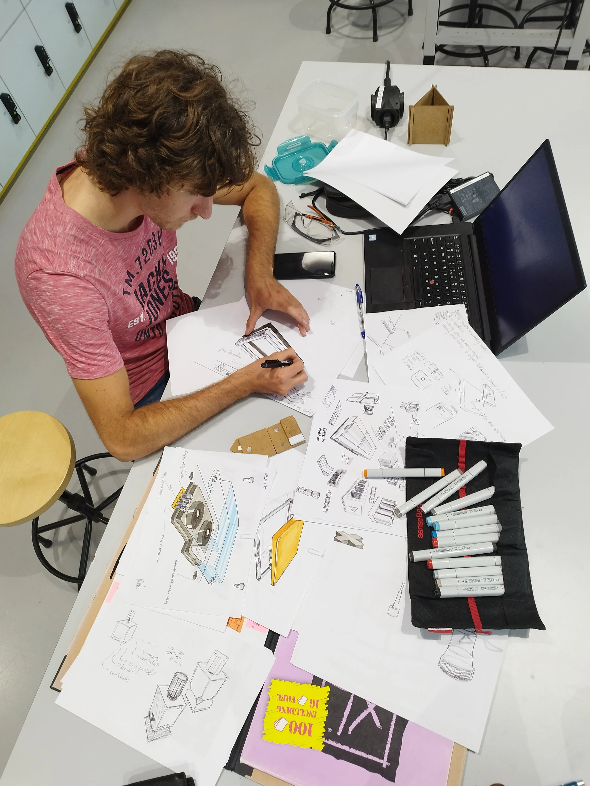
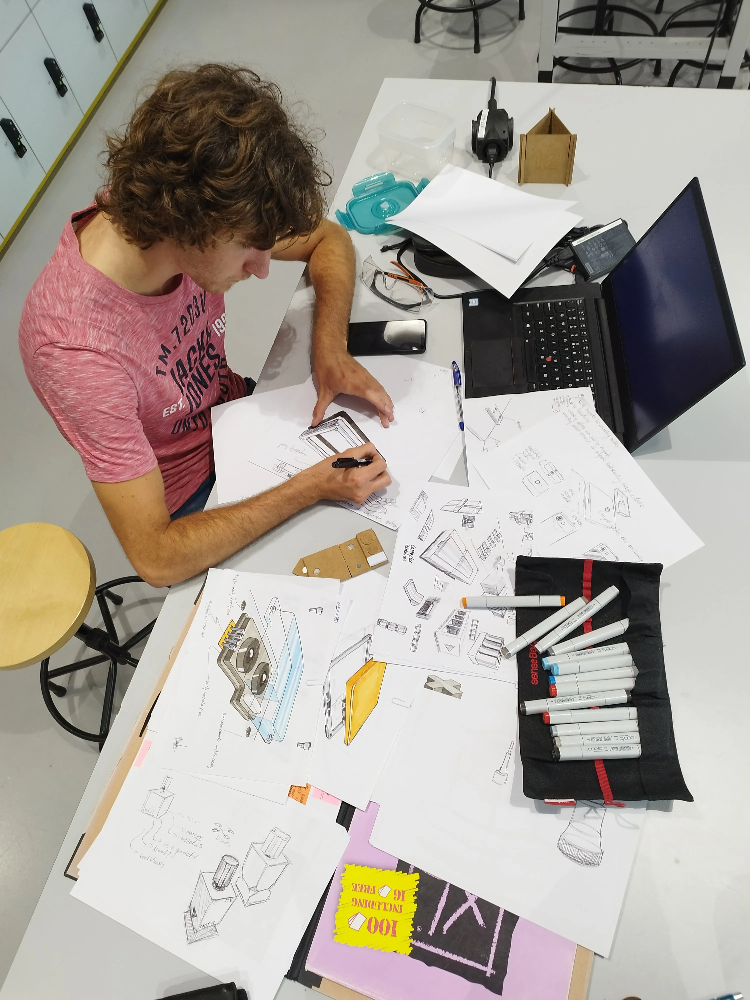


_1-min.webp)

 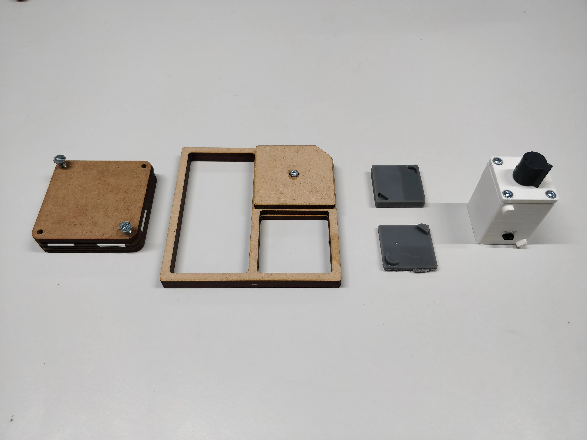
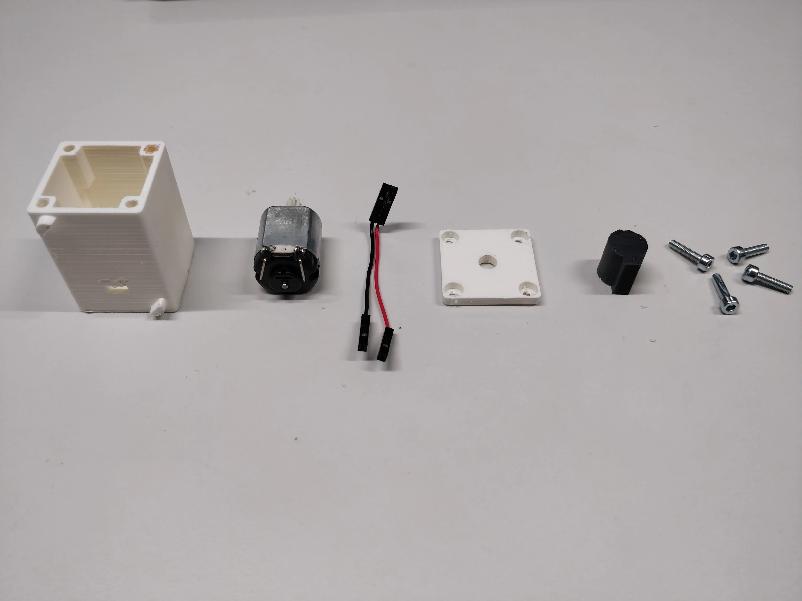
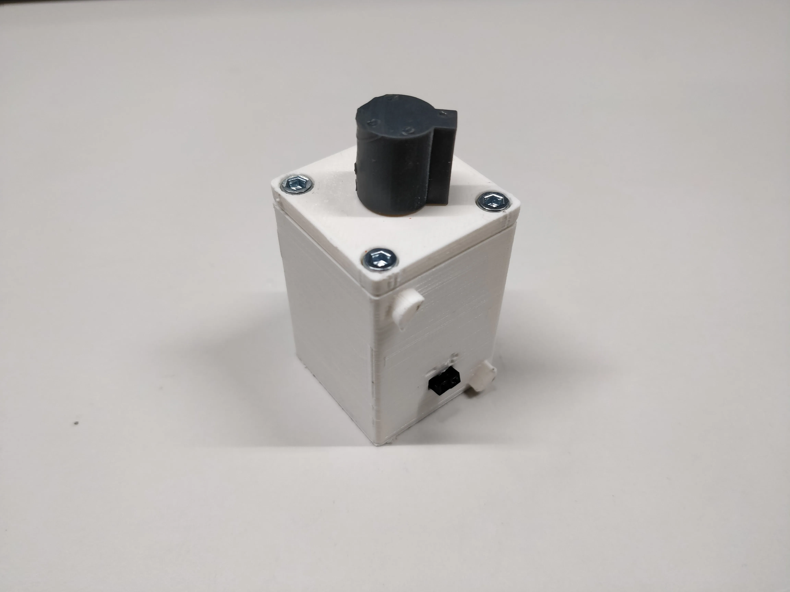
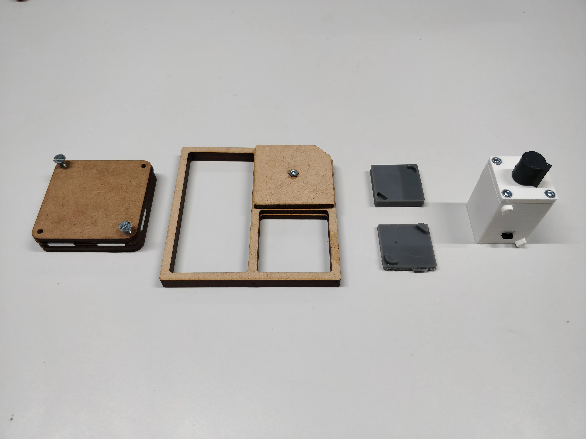
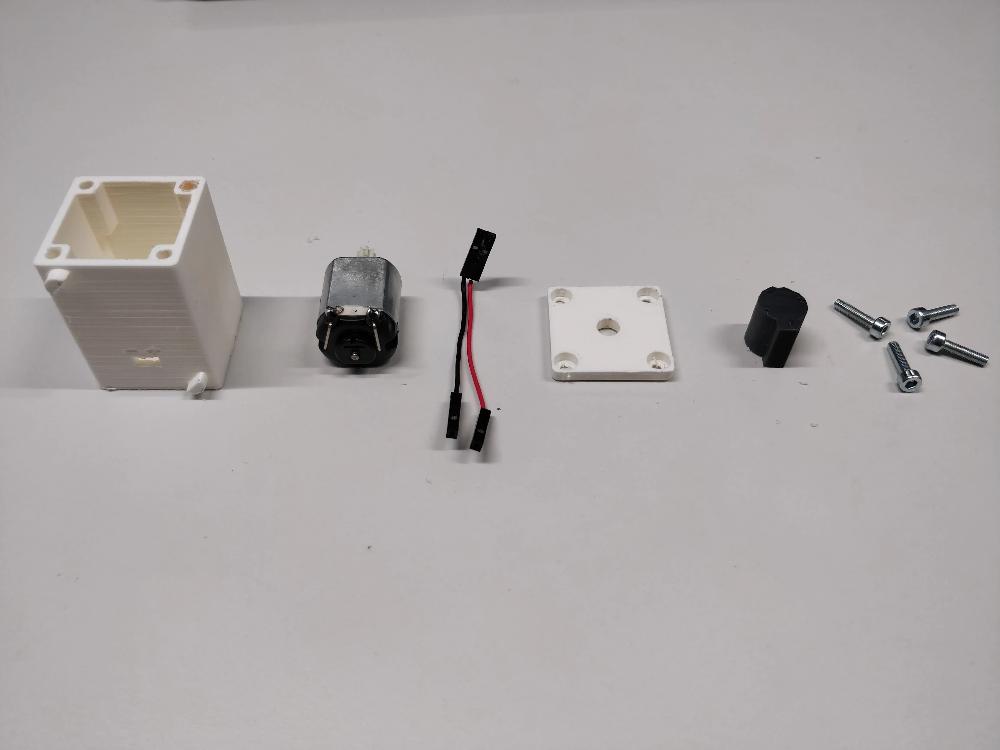
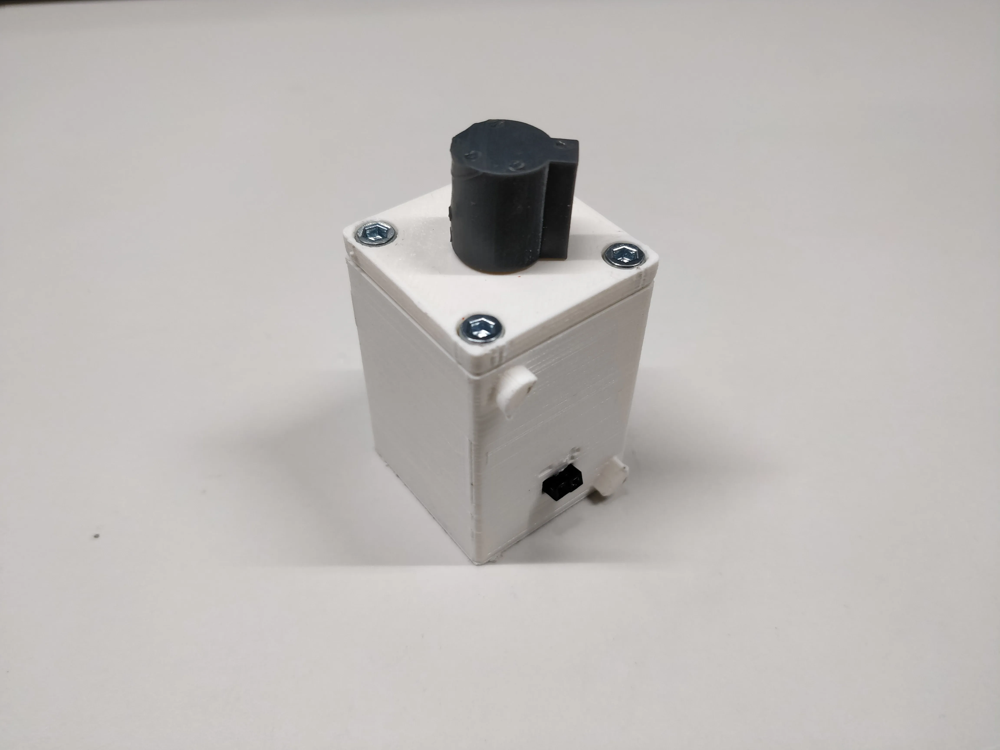
 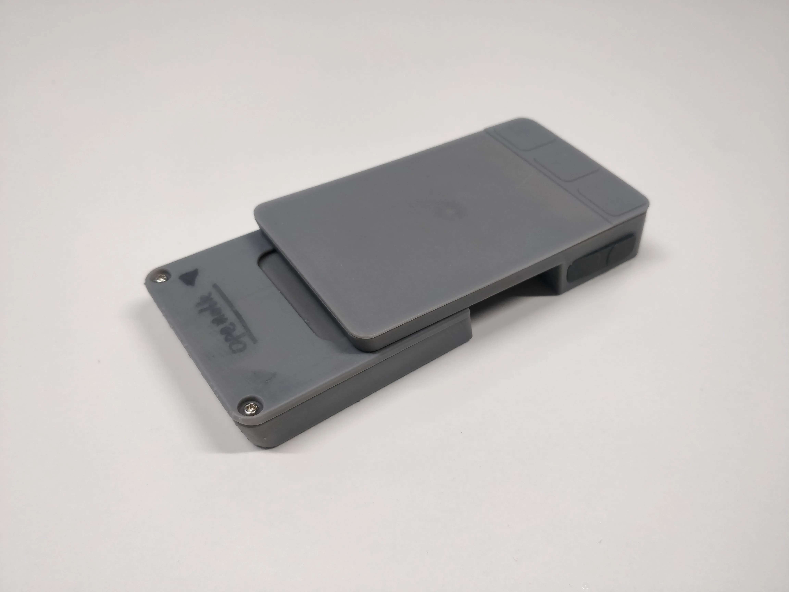
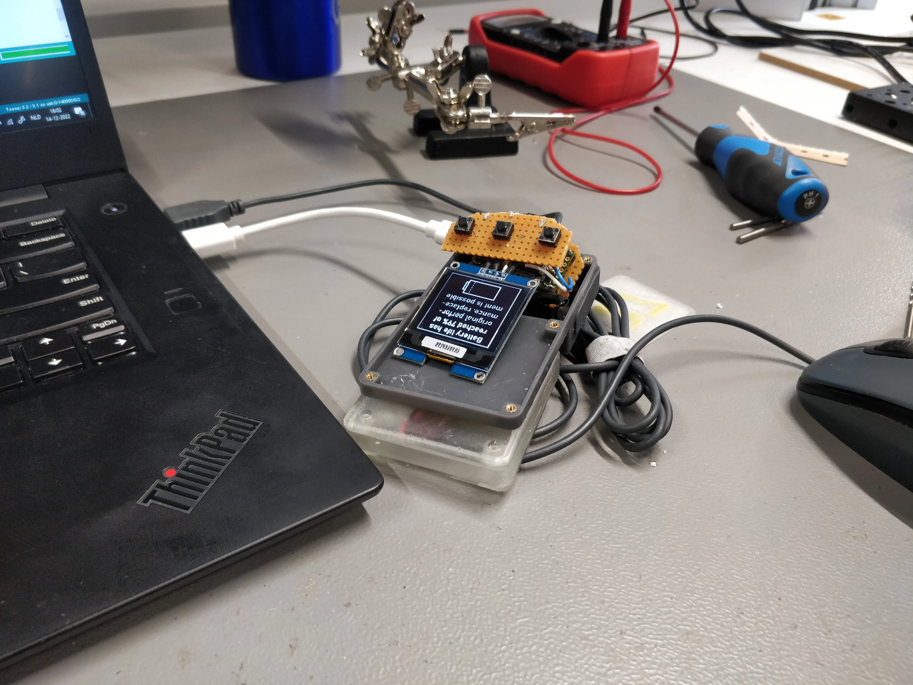
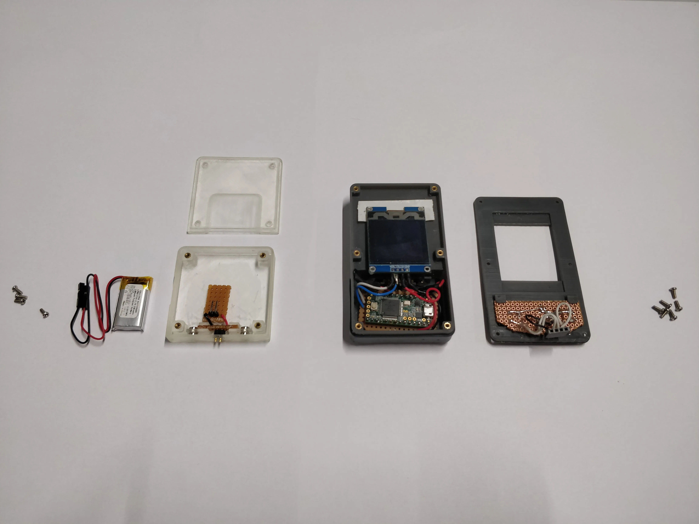
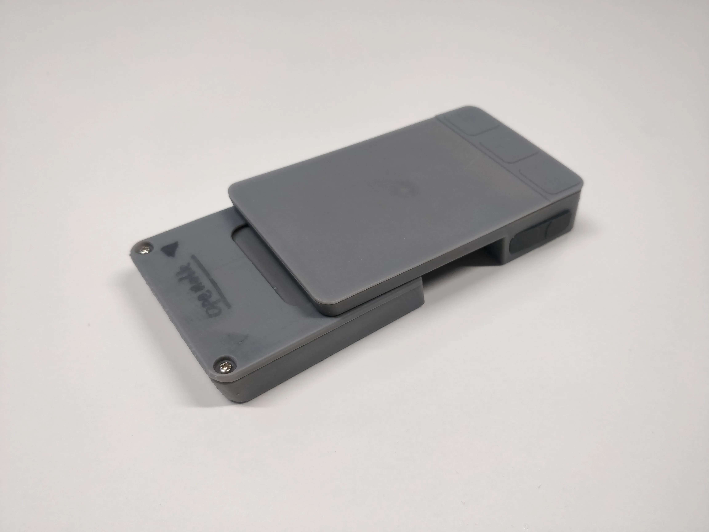
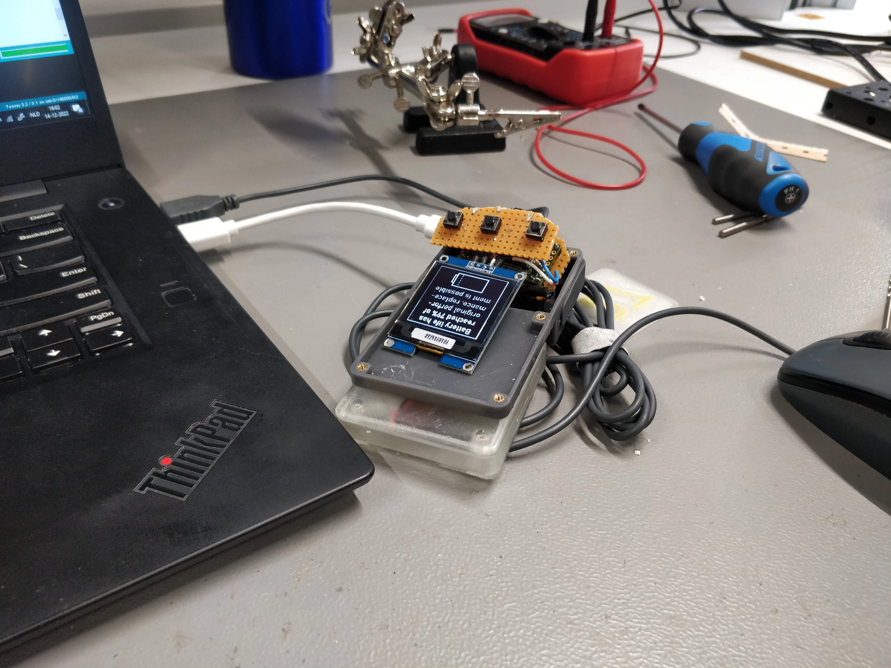
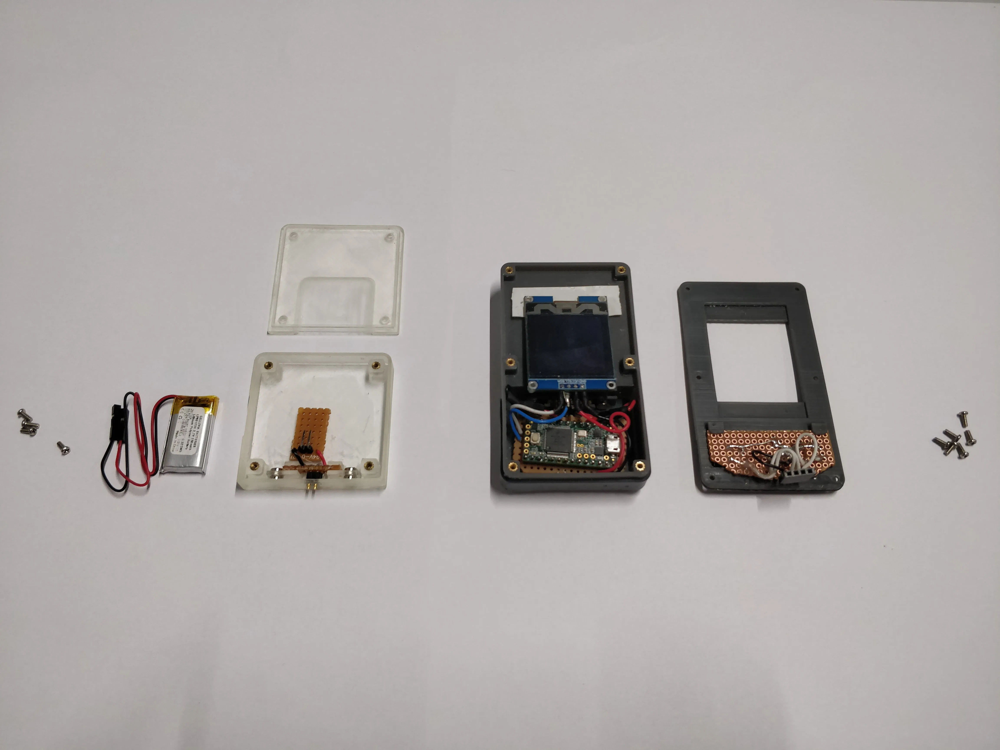

This is just a sidequest you had to hide text as easter eggs which looks like a line